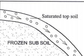

(b) State three factors that determine the folding of crustal rocks.(3 marks)
Crustal rocks should be in layers/sedimentary.
The rocks should be young in order to bend.
The forces operating on the crustal rocks should be compresslOnal.
The amount of pressure applied should be high.
3. The diagram below represents some volcanic features. Use it to answer the questions below.
Name the features marked P, Q, R and S.
— Sill (1 mark)
Q — Vent
R — Batholith
S— Lopolith
4. (a) Identify the main characteristics of the ocean water.(2 marks)
Ocean water is saline/salty.
The temperature of ocean water varies horizontally and vertically. Varies in density
It is in constant movement
(b) Give three factors that influence wave deposition.(3 marks)
The depth of the water should be shallow along the coast Configuration of the coastline/change in the alignment of coastline. The shore should have a gentle gradient.
The breaking waves should have strong swash and a weak backwash./constructive wa es.
Ample materials to be deposits
5. (a) List the three types of dunes. (3 marks)
Barchans
Seif dunes/longitudinal/linear Transverse/wave dunes.
Star dunes Draas
(b) Identify two processes through which wind transports materials in arid areas. (2 marks)
Suspension Saltation
Surface creep/traction.
SECTION B
Answer question 6 and any other two questions from this section.
6. Study the map of Taita Hills 1:50,000 (sheet 189/4) provided and answer the following questions.
(a) (i) Give the four figure grid reference of the trigonometrical station (2208m).
(1 mark)
(2208m)
2122
(ii) What is the general direction of the flow of River Voi (Goshi)? (1 mark)
Eastwards/south eastwards
(b) (i) Measure the length of the road labelled A23. Give your answer in kilometres.
(2 marks)
14.6km (+ 0.1)
(ii) Citing evidence from the map, identify three social services offered in the area covered by the map. (6 marks)
Social service Evidence
Health services Dlspensary/Health centre.
Religious services Church/Mosques. Educational services - polytechnics/schools. Administration services chiefs/DC’s. Office.
Rehabilitation services -Rehabilitation center/prison.
Security police post. Water supply pump house
(c) Describe the relief of the area covered by the map. (7 marks)
The land slopes from West to East.
The western part is a highland while the eastern is a lowland. There are many hills in the area covered by the map. Example Mgange Hills/Mragua Hills.
The area has several river valleys.
The Eastern part of the area is generally gently sloping.
The highest point is 2208 metres.
The lowest point is 620 metres.
There is rugged landscape in the Western part/there are many ridges. There are bluffs/cliffs.
The North Western part of the Map has steep slopes.
There are outcrop rocks.
There are many Cols.
(d) Citing evidence front the map, explain four factors that may have influenced agricultural activities in the area. (8 marks)
Presence of road network to provide transport facilities.
The South Eastern part receives low rainfall as evidenced by scrub vegetation suitable for sisal growth.
There is availability of labour due to dense settlement at on the Western part around Mgange, Mragua and ,Mwangea
The Eastern part is sparsely settled/ widely spaced contours hence mechanization.
The Western part receives hi% rainfall as evidenced by forests and permanent rivers which has lnfluenced farming.
Availability of vertinary services evidenced by cattle dips favour livestock farming.
Availability of advisory services evidenced by farmers training center favour farming in the area.
7. (a) (i) What is a rock? (2 marks)
A rock is a naturally occurring aggregate of mineral particles forming part of the earth’s crust
(ii) Give two examples of plutonic igneous rocks. (2 marks)
Granite Diorite Peridotite Gabbro
Syenite.
Nepheline
Diabase.
(b) Describe the processes of formation of each of the following types of sedimentary rocks:
(i) Mechanically formed.(4 marks)
Sediments used to form the rocks are derived from weathering of existing rocks.
The weathered materials are transported by wind/ice/water. The weathered materials are deposited in layers on land or sea.
They are then compacted, and cemented into sedimentary rocks.
(ii) Organically formed.(4 marks)
These rocks are formed from remains of dead plants and animals./fossiIs
These remains accumulate in the oceans/basins/land, in layers.
The materials are deposited in layers/strata.
The accumulated materials are compressed, compacted and cemented into sedimentary rocks.
(c) State the characteristics of rocks.(5 marks)
Some rocks have joints.
Rocks have varied degree of hardness.
Rocks have cleavage.
Rocks have varied texture. Rocks have different colours Some rocks have lustre
Rocks have varied specific density.
Rocks have streak.
Rocks have difrerent minerals.
Rocks have varied mineral structures.
(d) You are planning to carry out a field study on rocks within the local environment.
(i) List three methods you would use to record data.(3 marks)
Photographing/video recording. Labelling samples.
Note taking/recording observations.
Filling in questionnaires.
Drawing diagrams/sketches.
Tape recording.
(ii) State three problems you are likely to encounter.(3 marks)
Accidents may occur.
Inaccessibility of some areas with rocks.
Fatigue due to difficult terrain.
Unfavourable weather conditions that is heavy rains, high temperatures.
Attack by wild animals/snake bites.
Difficulty identifying some roks.
Difficulty breaking some rocks
(iii) Give two economic uses of rocks you are likely to identify.(2 marks)
Some rocks are used for construction. Some rocks are a Source of fossil fuel. Some are used for making carvings.
Some are sources of valuable minerals. Some are tourist’s attractions.
Some rocks store underground water/for irrigation.
Rocks weather to form soils for agriculture.
Some rocks for example limestone is a raw materiaI/ cement manufacture.
8. (a) (i) Identify the two types of earthquake waves.(2 marks)
Body waves/primary/secondary.
Surface waves/love/Rayleigh.
(ii) Describe the two ways through which the strength of an earthquake is measured.(2 marks)
The strength of an earthquake is measured by its intensity.
Intensity measures how strong and hard the earthquake shakes the ground.
It is measured on Mercalli scale.
The strength of an earthquake ls measured by its magnitude.
It is measured on Richter scale correct method.
(b) (i) Explain how vulcanicity causes earthquakes.(6 marks)
Sudden displacement of crustal rocks during vulcanicity causes tremors.
Violent volcanic eruptions/violent emissions of the volcanic gases can shake/shatter the rocks/tremors.
After volcanic eruption, a large void is created below the crust which causes the crustal rocks to sink due to gravity this causes the earth’s surface to shake.
Magma movement within the crust can cause tremors.
A sudden eruption of molten magma under the oceans can cause earth tremors as the water on the sea floor violently expands.
(ii) Name three major earthquake zones of the world.(3 marks)
The Great Rift Valley belt.
The Mediterranean — Himalayan belt.
The circum- Pacific belt. /ring of fire.
Mid-Atlantic Ocean belt.
(c) Explain four effects of earthquakes on the human environment.(8 marks)
Earthquakes lead to shaking/crumbllng of buildings leading to their destruction.
Earthquakes may lead to the falling of objects which may lead to loss of life.
Earthquakes may damage transport networks making movement difficult.
It may lead to destruction of electric lines/pipelines resulting to blackouts/fte incidences.
A large-scale sea wave caused by an undersea earthquake/Tsunami may flood the coastal lowlands leading to destruction of agricultural land.
Disturbances caused by earthquakes lead to landslides which crush and bury people/property.
Earthquakes may lead to collapsing of underground mines which may lead to burying of miners.
Earthquakes cause panic/anxiety/emotional shock.
Destruction of property leads to evacuation/displacement of people.
Strong earthquakes cause damage to nuclear plants/sewerage
systems which pollute the human environment.
9. (a) Name two types of landslides.(2 marks)
Slump Debris slide Rock slide Debris fall Avalanche
Rock fall.
(b) Explain how each of the following factors influence mass wasting:
(i) Climate(6 marks)
Areas that receive high rainfall experience massive landslides on steep s1opes/ areas that receive low rainfall have slow movement of rock materials down the slope.
In areas with large diurnal range of temperature there is expansion and contraction of soil particles which leads to movement of the soil particles.
Alternate freezing and thawing encourage mass movement of rock and soil materials.
(ii) Slope(2 marks)
Steep slopes encourage faster movement of material down the
slope. / Gentle slopes have slow movement of materials down the slope.
(c) (i) State four causes of soil creep.(4 marks)
Ploughing on a slope loosening the soil particles.
Wetting and drying of soil particles.
External forces such as earthquakes/ explosives/eruptions/heavy vehicles movements.
Frost heaving beneath the soil.
Alternate heating and cooling of the soil particles.
Undercutting of the base of the slope through road construction/mining.
(ii) Using a diagram, describe the process of solifluction.(5 marks)

In moderately/gentle sloping areas during winter water in the soil freezes thus freezing the soil.
When the weather becomes warm the top soil thaws.
Overtime the top soil becomes saturated with water while the sub- soil remains frozen (permafrost).
The saturated mass of top soil creeps over the frozen ground (permafrost).
(d) You intend to carry out a field study on the effects of mass wasting within the local environment.
(i) Give two methods of data collection that you would use for the study. (2 marks)
Give two methods of data collection that you would use for the
study.
Observing.
Administering questionnaires.
Photographing/video recording.
Reading from secondary sources/viewin films/video clips.
(ii) State two negative effects of mass wasting on the physical environment that you are likely to identify. (2 marks)
Destruction of vegetation.
Dereliction of land /scars
Blockage of rivers.
Exposure of land to soil erosion.
(iii) Give two follow-up activities you would be involved in after the field study.
(2 marks)
Data analysis/discussion about findings.
Report writing.
Data presentation.
Consulting geography teachers.
Display photographs taken.
Drawing conclusions.
Reading more on the topic.
10. (a) (i) Name the three types of river erosion.(3 marks)
Head ward erosion /spring sapping.
Vertical erosion.
Lateral erosion
(ii) Describe each of the following processes of river erosion:
I. Abrasion(4 marks)
The river transports the materials downstream.
The materials are used by the river as tools for scouring,
The load is hurled by the water against the banks and dragged along the river bed.
The load chips off the rocks on the bank and river bed. The load being dragged smoothens the river bed.
The eddy currents rotate the load in the hollows on the river bed grinding the rocks widening into potholes.
II. Solution(3 marks)
River water contains both organic and weak inorganic acids. It reacts with some minerals in some rocks in the river bed to form soluble minerals.
The soluble minerals are carried downstream in solution form.
OR
River water flows over rocks with soluble minerals.
The water dissolves soluble minerals to a solution.
The minerals are carried away in solution.
(c) Describe the characteristics of the upper stage of a river.(6 marks)
The gradient is steep.
The river has a small load. The flow of the river is fast. Vertical erosion is dominant.
The cross profile of the valley is v-shaped. It has interlocking spurs.
The river valley is deep.
The river channel is narrow.
Some parts of the river course have rapids/waterfalls/cataracts.
The river volume is low.
The river channel is winding
(d) (i) What is river rejuvenation?(2 marks)
This is the renewal of a rivers erosive ability/activity/power.
(ii) Give four causes of river rejuvenation.(4 marks)
Increase in river discharge.
Change in rock resistance.
Unequal regional subsidence.
Regional/local uplift of the land. Fall in sea level/drop in sea level.
(iii) Identify three features that result from river rejuvenation.(3 marks)
Knick points.
Rejuvenation terraces/paired terraces.
Incised meanders/in grown/entrenched meanders.
Rejuvenation gorges/valley within a valley.